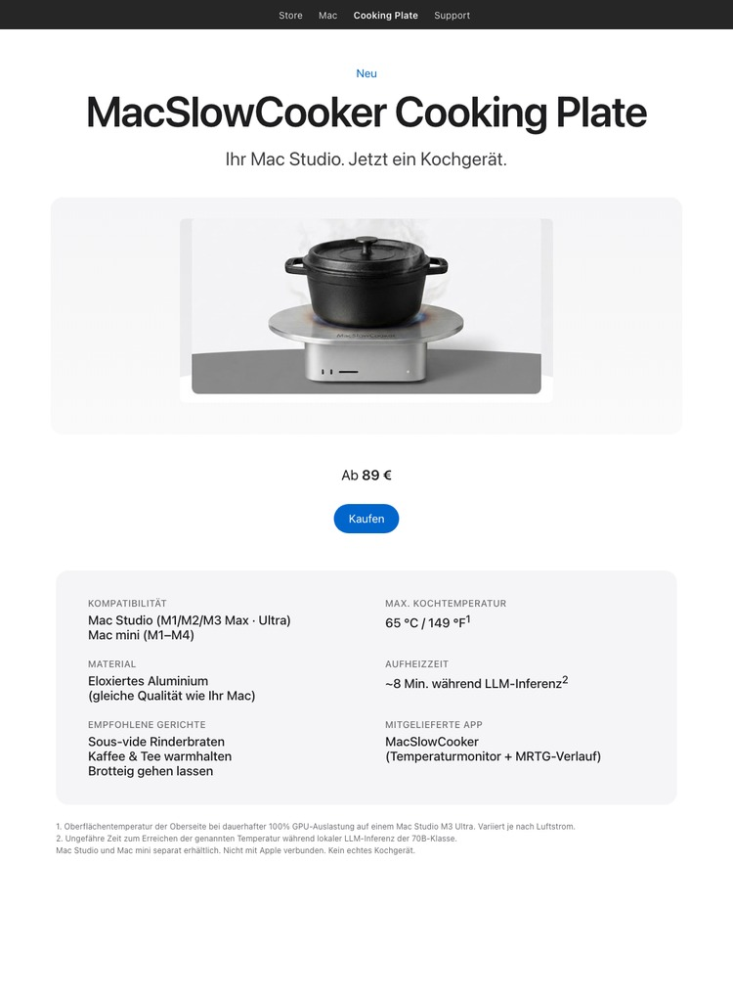

MacSlowCooker Cooking Plate
Ihr Mac Studio. Jetzt ein Kochgerät.

Cluster Edition

Cluster Edition — für den LLM-Trainings-Rack. Vier Mac minis, eine Platte. Gleiche Parodie, viermal so viele BTU.
Woher der Witz kommt
Während der Entwicklung von MacSlowCooker — einer echten macOS-App, die GPU-Auslastung im Dock als Kochtopf visualisiert — heizte das Ausführen lokaler LLM-Inferenz auf einem Mac Studio M3 Ultra das Gehäuse so stark auf, dass der Witz "könnte man darauf eigentlich kochen?" immer wieder aufkam.
Daher gibt es diese Konzeptseite. Sie rahmt die Wärmeabgabe eines hart arbeitenden Macs als Kochfeature. Die Zahlen sind echt, das Produkt ist es nicht.
Die echten Zahlen
- Das Mac Studio M3 Ultra erreicht ca. 65 °C / 149 °F auf der Oberseite bei dauerhafter 100% GPU-Auslastung.
- Zeit zum Erreichen dieser Temperatur während lokaler LLM-Inferenz der 70B-Klasse: ~8 Min.
- Apples Thermal-Design hält die Oberseite weit unter normalen Kochtemperaturen. Sous-vide-Bereich, kein Pfannengericht.
- Das alles können Sie live mit der echten MacSlowCooker-App überwachen (Dock-Icon, Popup-Fenster, MRTG-style 4-Panel-Verlaufsanzeige).
Bitte nicht wirklich machen
Heißes Kochgeschirr, Flüssigkeiten oder hitzeempfindliche Dinge auf einen aktiven Computer zu stellen ist eine schlechte Idee. Die Oberseite des Mac Studio ist Aluminium, aber der Luftstrom ist kritisch, um den SoC unter den Wärmegrenzen zu halten. Ihn zu blockieren verkürzt die Lebensdauer der Maschine und kann die Garantie erlöschen lassen.